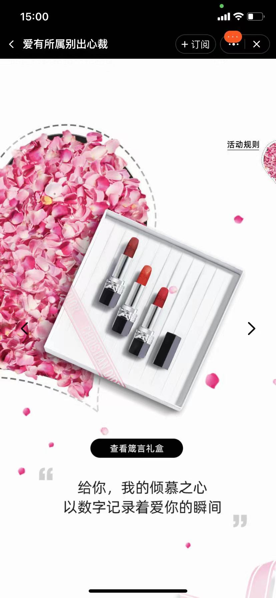
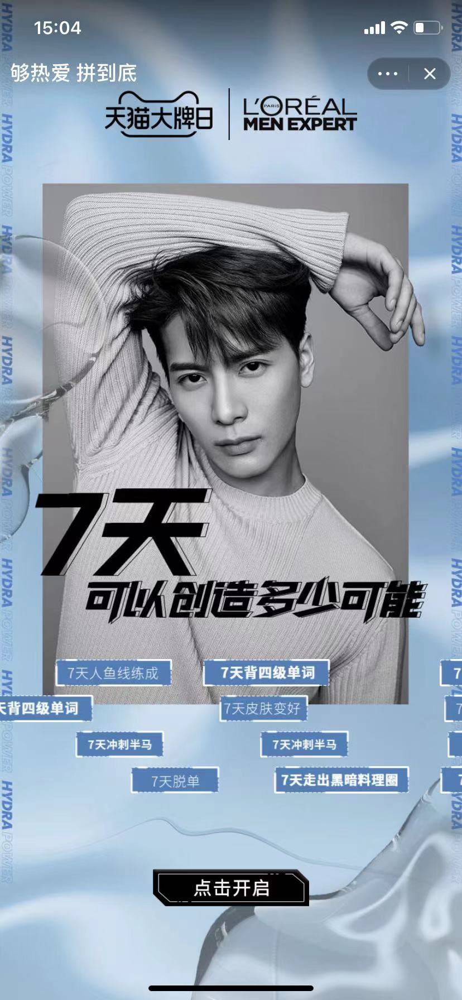
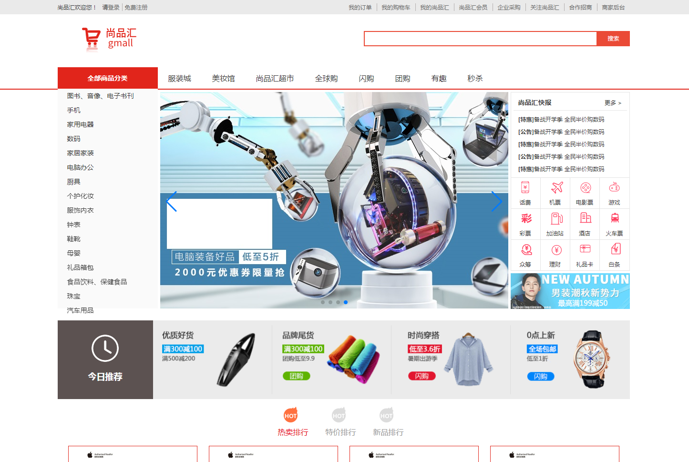
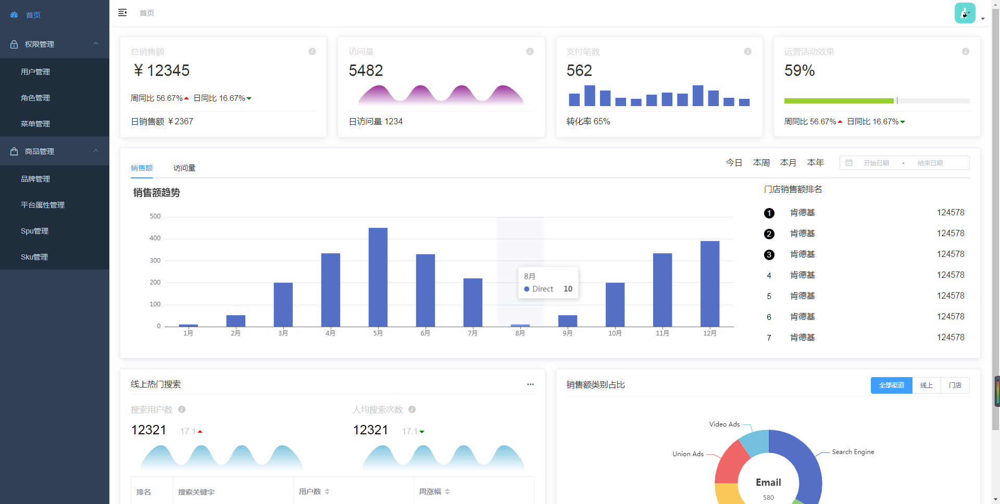
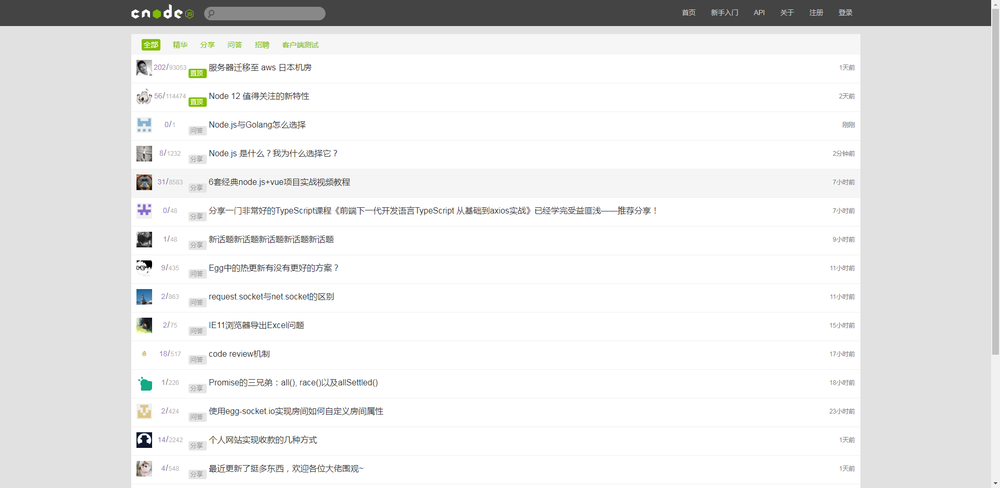

我的技能点
- HTML & CSS
-
- HTML 语义化、Form 表单、选择器、常见样式、浏览器调试等
- 盒模型、浮动、定位、BFC、居中、常见布局、svg 图标等
- Flex、移动端适配、Canvas
- transition、transform、animation 等 CSS3 属性
- JavaScript
-
- 变量提升、作用域、立即执行函数（IIFE）、深拷贝、浅拷贝、闭包等
- DOM 增删改查、事件模型（捕获 / 冒泡 / 事件委托 / 事件循环 / 任务队列）等
- BOM、Ajax、跨域、JSONP、CORS、Promise、async await
- 原型、原型链、继承、this、ES6、正则表达式、面向对象
- TypeScript
-
- 类型声明、抽象类、接口、泛型、工具类型
- HTTP
-
- GET、POST、状态码
- Vue2
-
- 响应式原理、事件、计算属性与监视、key的原理、过滤器、自定义指令、生命周期
- 组件通信、render函数、mixin、插件、nextTick、过渡与动画、插槽
- Vue Cli、Vue Router、Axios、Vuex、ElementUI
- Vue3
-
- setup、ref、reactive、响应式原理、计算属性与监视、生命周期、自定义hook函数
- provide与inject、shallowReactive、shallowRef
- readonly、shallowReadonly、toRaw、markRaw
- Fragment、Teleport
- Node.js
-
- events 模块、http 模块、fs 模块、path 模块
- Buffer、流（stream 模块）
- MySQL 数据类型、sql 语句
- 其他技能
-
- Markdown
- 命令行、Git
- WebPack
- Sass、Less
- Web性能优化
工作经历
- 爱有所属别出心裁
-

- 项目介绍：本项目是为迪奥品牌做的淘宝小程序，投放于淘宝APP迪奥店铺首页（现已下线），主要用于在七夕节提高店铺产品曝光量。 项目使用了淘宝官方提供的 手势识别插件、Pixi.js 等技术。
- 项目特色：手势识别、页面分层动效、飘花动效等。
-
项目职责：
- 对项目进行需求分析，与客户、PM 沟通可行性方案
- 还原设计师提供的设计稿，开发前端页面、功能及特效
- 与后端对接接口，进行前后端联调
- 修复测试提交的bug，通过测试用例
- 开发完成后提交淘宝小二审核，根据小二提出的建议进行修改，最后发布上线
- 温馨提示：点击左侧图片，使用淘宝APP扫描二维码即可预览项目（由于项目已下线及淘宝二楼限制，页面展示存在偏差）。
- 点击查看二维码，使用淘宝APP扫描即可预览项目
- 够热爱拼到底
-

- 项目介绍：本项目是为欧莱雅男士品牌做的淘宝小程序，投放于淘宝APP欧莱雅男士店铺首页（现已下线），主要用于为该淘宝店铺获取到更多用户及会员，并为符合条件用户进行抽奖。
- 项目特色：弹幕效果、上传图片功能、大转盘抽奖等。
-
项目职责：
- 对项目进行需求分析，与客户、PM 沟通可行性方案
- 还原设计师提供的设计稿，开发前端页面、功能及特效
- 与后端对接接口，进行前后端联调
- 修复测试提交的bug，通过测试用例
- 开发完成后提交淘宝小二审核，根据小二提出的建议进行修改，最后发布上线
- 温馨提示：点击左侧图片，使用淘宝APP扫描二维码即可预览项目（由于项目已下线，部分页面及功能可能无法展示）。
- 点击查看二维码，使用淘宝APP扫描即可预览项目
- 总有美好会发生
-

- 项目介绍：本项目是为星巴克品牌做的淘宝小程序，投放于淘宝APP星巴克店铺首页（现已下线），主要用于为该淘宝店铺获取到更多用户及会员，并在直播当天为符合条件用户进行直播抽奖。
- 项目特色：刮刮卡效果、人物动效、用户输入等。
-
项目职责：
- 对项目进行需求分析，与客户、PM 沟通可行性方案
- 还原设计师提供的设计稿，开发前端页面、功能及特效
- 与后端对接接口，进行前后端联调
- 修复测试提交的bug，通过测试用例
- 开发完成后提交淘宝小二审核，根据小二提出的建议进行修改，最后发布上线
- 驻场星巴克直播间，配合主播为用户抽奖
- 温馨提示：点击左侧图片，使用淘宝APP扫描二维码即可预览项目（由于项目已下线，部分页面及功能可能无法展示）。
- 点击查看二维码，使用淘宝APP扫描即可预览项目
- 肌肤情报局
-

- 项目介绍：本项目是为资生堂品牌做的淘宝小程序，投放于淘宝APP资生堂店铺，主要用于检测用户肌肤状态并提供检测结果，以及推荐产品。 项目使用了淘宝官方提供的 肌肤测试插件、canvas 等技术。
- 项目特色：拍摄用户脸部肌肤、保存海报、音乐播放等。
-
项目职责：
- 对项目进行需求分析，与客户、PM 沟通可行性方案
- 还原设计师提供的设计稿，开发前端页面、功能及特效
- 与后端对接接口，进行前后端联调
- 修复测试提交的bug，通过测试用例
- 开发完成后提交淘宝小二审核，根据小二提出的建议进行修改，最后发布上线
- 温馨提示：点击左侧图片，使用淘宝APP扫描二维码即可预览项目。
- 点击查看二维码，使用淘宝APP扫描即可预览项目
- 发发奇许愿池
-

- 项目介绍：本项目是为发发奇品牌做的淘宝小程序，投放于淘宝APP发发奇海外店铺，主要用于为该淘宝店铺获取到更多用户，提高店铺关注量及产品曝光量，并为符合条件用户进行抽奖。 项目使用了 Pixi.js 等技术。 同时，还开发了该项目的后台管理系统，交付客户使用，方便用户根据活动日期配置不同产品信息、上下架产品等操作。
- 项目特色：日历、喷泉动效、投币动效、轮播等。
-
项目职责：
- 对项目进行需求分析，与客户、PM 沟通可行性方案
- 还原设计师提供的设计稿，与同事共同开发前端页面、功能及特效
- 与后端对接接口，进行前后端联调
- 修复测试提交的bug，通过测试用例
- 开发完成后提交淘宝小二审核，根据小二提出的建议进行修改，最后发布上线
- 温馨提示：点击左侧图片，使用淘宝APP扫描二维码预览项目。
- 点击查看二维码，使用淘宝APP扫描即可预览项目
- 更多项目
- 666炸场红 不失雾 嘉实多选油助手 持妆力大挑战 MAC自组眼影盘定制 悦木之源线下集市 纪梵希刻字定制 斯凯奇超虎宇宙


自学项目经历
- Vue 实现尚品汇电商网站（PC 端）
-
- 
- 项目介绍：本项目是使用 Vue2 搭建的一个电商型网站，包含了主流电商网站的一些主要业务，如搜索商品、注册登录、购物车、微信支付、产品放大镜等。 技术方面，该项目使用 Vue CLI 创建项目模板， 使用 Vue Router 进行前端路由的切换及传参， 使用 Axios 获取后端数据，Mock.js 获取前端 Mock 的数据， 使用 nprogress 在发送请求时显示进度条， 使用 Vuex 进行项目的状态的模块化管理， 使用 UUID 为游客身份用户创建用户 id， 使用 VeeValidate 在用户注册时验证表单 使用 vue-lazyload 进行图片懒加载， 使用了 ElementUI 并按需加载 MessageBox 组件库， 并将项目部署于腾讯云服务器，使用 nginx 反向代理实现跨域请求访问。
- 遇到的问题及解决方案：点击查看项目笔记
- 技术栈：Vue CLI / Vue Router / Vuex / Axios / ES6 / Npm / Less / ElementUI
- 项目源码: 点击查看(GitHub) | 点击查看(Gitee)
- 预览项目: 点击查看
- Vue 实现尚品汇电商网站后台管理系统（PC 端）
-
- 
- 项目介绍：本项目是使用 Vue2 搭建的一个电商型网站后台管理系统，包含了登录、数据可视化、权限管理、商品管理等业务。 技术方面，该项目基于 vue-admin-template 模板， 使用 ElementUI 提供的组件及 API 进行页面的搭建和功能实现， 使用 Vue Router 进行前端路由的切换及传参， 使用 Axios 获取后端数据， 使用 Echarts 实现数据可视化。
- 遇到的问题及解决方案：点击查看项目笔记
- 技术栈：Vue Router / ElementUI / Axios / Echarts / ES6 / Npm / Less
- 项目源码: 点击查看(GitHub) | 点击查看(Gitee)
- Vue技术栈实现CNode社区（PC 端）
-
- 
- 项目介绍：该项目使用 Vue 还原 CNode 官方社区，项目调用官方社区提供的 API。 使用 Vue-cli 创建项目模板， 使用 Axios 获取数据， 使用 Vue Router 进行前端路由的切换及传参， 使用 Watch 监听路由的变化， 使用了 Less 预处理器， 使用了 ElementUI 并按需加载 Pagination 组件。
-
遇到的问题及解决方案：
1. v-html 渲染代码导致 scoped 的样式没有应用在 v-html 内部，使用 样式穿透 /deep/ 让 scoped 中的样式生效。
2. ElementUI 的组件样式不符合需求，使用浏览器调试工具查看组件，根据渲染出来的代码进行 样式覆盖。 - 技术栈：Vue-cli / Vue Router / Axios / ES6 / Npm / Less / ElementUI
- 项目源码: 点击查看(GitHub) | 点击查看(Gitee)
- 预览项目: 点击查看(GitHub)
- 可爱皮卡丘
- 轻项目

{kind=link}
{kind=link}
{kind=link}
{kind=link}
{kind=link}
{kind=link}
{kind=link}
{kind=link}
{kind=link}
个人经历
2016年7月毕业于南昌理工学院，毕业前于南昌档案馆实习。
2017年9月-2019年9月在上海北苑教育机构任职，工作期间利用业余时间自学前端开发。
2019年9月-2022年4月在上海莫凡信息技术有限公司任职前端开发，入职前半年开发的是淘宝移动端 H5 业务，之后一直开发的是淘宝小程序、小部件、店铺装修模块等业务。
自学及工作过程中有总结书写技术博客的习惯：
我的知乎（点击查看）
我的掘金（点击查看）
教育经历
- 南昌理工学院
- 计算机应用专业